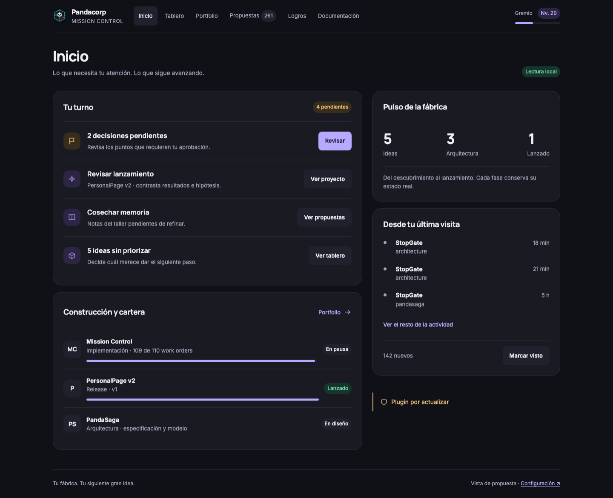
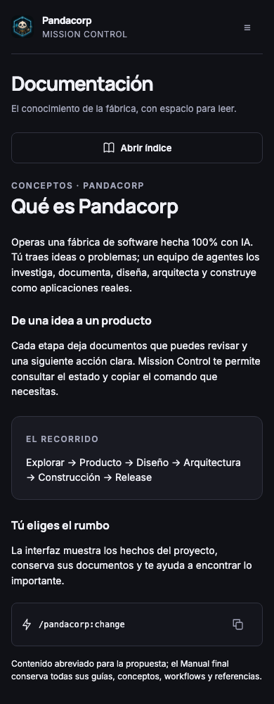

Propuesta visual · datos de muestra
Órbita / Mission Control
Una fábrica con más claridad, mejor lectura y la misma personalidad.
Escritorio + móvil
Inicio · prioridades y proyectos a primera vista

Documentación · espacio para leer
